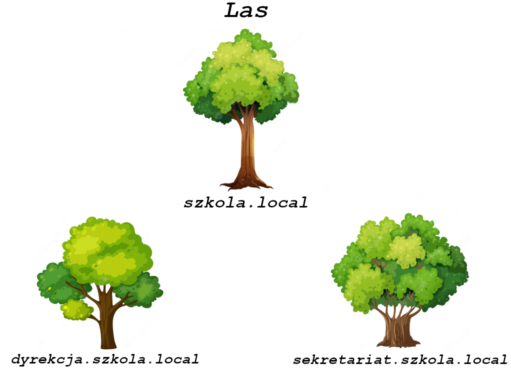

ADMINISTRACJA SYSTEMAMI OPERACYJNYMI / Active Directory (AD)
Konfiguracja usługi domenowej AD (Active Directory)
W menadżerze serwera dodaj oraz zainstaluj usługę domenową active directory wraz z funkcjami które zaproponuje system. Schemat postepowania jest przedstawiony poniżej: Po instalacji kliknij ikonę powiadomień menadżera serwera, po czym podnieś poziom tego serwera do poziomu kontrolera domeny: Zanim zaczniemy, trochę teori:  W usłudze domenowej active directory stosowana jest nomenklatura lasu i drzewa. Powyżej przedstawiam zobrazowanie tej idei.Tworząc las sadzimy pierwsze drzewo, czyli główną najwyższą w hierarchii domenę rodzica. Nazwa tej domeny to szkola.local.
Z czasem będziemy potrzebować subdomen czyli pod domen lub inaczej dzieci rodzica szkola.local. Ich nazwy będą miały dopisaną końcówkę .szkola.local po rodzicu. Wiec drzewo "Rodzic" wraz z swoimi dziećmi tworzy las.
Przystępujemy do konfiguracji usługi domenowej AD
Dodaj nowy las, sadzimy teraz nasze pierwsze główne drzewo: szkola.local Wprowadzamy hasło do trybu przywracania usług katalogowych (DSRM) np.: ZAQ!2wsx Nie przejmujemy się komunikatem o DNS`sie. Kolejne okna pomijamy klikając dalej. Na koniec gdy weryfikacja jest poprawna klikamy zainstaluj. Po instalacji nastąpi ponowne uruchomienie systemu który od tej pory będzie kontrolerem domeny szkola.local. Gdy spróbujesz się zalogować pojawi się komunikat o wygaśnięciu hasła, po kliknięciu OK wprowadź nowe hasło np.: ZAQ!2wsx
Skoro nasz Windows server jest już kontrolerem domeny, to możemy do niego dołączyć z poziomu Windowsa 10.
Poniżej przedstawiono jak uruchomić okno zmiany nazwy komputera/domeny Zmień nazwę komputera (max 15 znaków) a następnie wpisz w text box`sie nazwę domeny Po chwili pojawi się okno logowania. Zaloguj się na konto administratora serwera.
(Logując się tu logujesz się na serwer za pomocą konta Windows server 2012 R2) Gratulacje udało się dołączyć do domeny.
 Na razie nie mamy użytkowników w domenie, wiec nie będziemy się puki co
logować za pośrednictwem domeny.
Na razie nie mamy użytkowników w domenie, wiec nie będziemy się puki co
logować za pośrednictwem domeny. (Będąc teraz w domenie pasowało by wyłączyć konto Max)